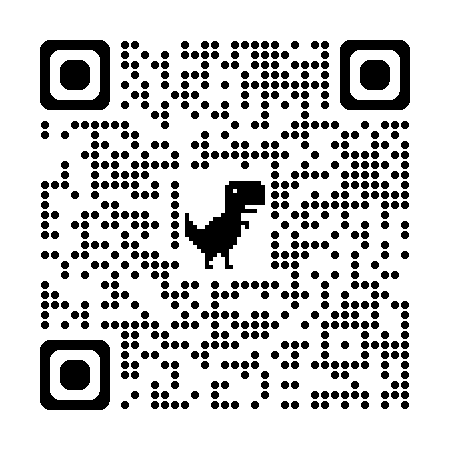

A Pizzaria DiGiuseppe é o lugar onde o sabor tradicional se encontra com a qualidade artesanal, oferecendo pizzas feitas com ingredientes frescos e massas preparadas com todo carinho para momentos deliciosos em família ou com amigos.

Nosso menu foi feito para todos os gostos e momentos.
O sabor que transforma momentos em boas lembranças

Doce, irresistível e feita para adoçar seu momento.
Um vídeo que mostra o que as palavras não conseguem descrever: o sabor DiGiuseppe.
Nosso cardápio foi criado para agradar todos os paladares das tradicionais pizzas salgadas com sabores clássicos e irresistíves, até as doces, que transformam qualque momento em uma experiência inesquecível. Escaneie o Qr code ou cliquer no botão PDF, para obter o cardápio
Cardápio